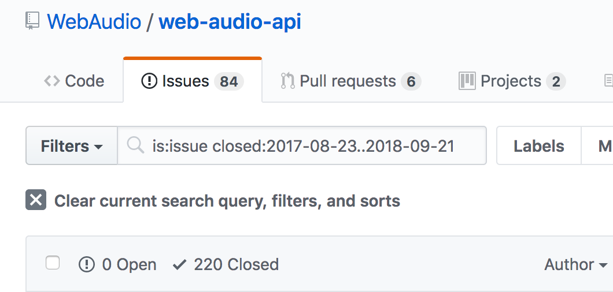

class: center, middle # Recent and future evolution of the Web Audio API Paul Adenot <span class="big logo">mozilla</span> Web Audio Conference 2018 TU Berlin --- class: middle ```sh $ git clone git@github.com:padenot/wac-17-slides.git wac-18-slides $ cd wac-18-slides $ sed -i "s/17/18/" index.html $ sed -i "s/London/Berlin/" index.html ``` --- # Agenda ## What's new in the spec since WAC'17? ## Where are we in the standardization process? ## What's next? --- class: middle center # Some statistics: pull requests <img src="merged.png" style="max-width:80%"> --- class: middle center # Some statistics: issues  --- class: middle # Contributor count ```sh $ git log --color --since=2017-08-23 | grep "Author:" | sort | uniq | wc -l 19 ``` - BBC, Google, Intel, Dolby, Opera, Microsoft, Mozilla, Noteflight, W3C, etc. - Universities, public research lab - Independant people --- class: center middle # Changes to the spec --- class: center middle # Changes to the <blink style="color:red">spec</blink> --- # However Tests are happening, lots of tests from Chromium, some from Mozilla, and then some other. - <a href="https://wpt.fyi/results/webaudio">https://wpt.fyi/results/webaudio</a> - <a href="https://treeherder.mozilla.org/#/jobs?repo=mozilla-central">https://treeherder.mozilla.org/#/jobs?repo=mozilla-central</a> - Also running on Chromium's CI Reasonably encouraging Web Compat results --- # Editorial - Now use [bikeshed](https://github.com/tabatkins/bikeshed) instead of [ReSpec](https://github.com/w3c/respec) - Faster spec loading - More cross-referencing capabilities - Algorithms validation - Generaly more ergonomic - Auto-publishing and tests via [travis-ci](https://travis-ci.org/WebAudio/web-audio-api) - [Diff](https://pr-preview.s3.amazonaws.com/WebAudio/web-audio-api/1737/c05ff33...rtoy:10a9cfb.html#Convolution-channel-configurations) and [preview](https://pr-preview.s3.amazonaws.com/rtoy/web-audio-api/pull/1737.html) in PRs - [Changelog](https://webaudio.github.io/web-audio-api/#changelog) (required for CR) - [IPR validation](https://labs.w3.org/hatchery/repo-manager/pr/id/WebAudio/web-audio-api/1758) for any non-trivial PR (automatic) --- # Fixes taxonomy In order of frequency: - CR process compliance - Features - Bug fixes - Specification holes --- # AudioWorklet changes - ... numerous - Output arrays are zero-initialized - `outputChannel` now works in the ctor (mono by default) - Flexible channel topologies (`n` inputs of `m` channels). - `AudioParam` `ArrayBuffer` with constant value during this render quantum _can_ have a length of 1 - Return value (allows implementing tails) - `processorOptions` dictionary - `currentFrame` in Worklet Global Scope - Normative text for event loop integration --- # OfflineAudioContext lazy allocation - The allocation is only done when `startRendering()` is called - A failure to allocate is signaled by a rejected `Promise` --- # MediaElementAudio SourceNode behaviour - Once "captured", can't undo it - On `AudioContext.{close, suspend}`, audio frames are dropped (not auto paused/no auto routed to the speakers again) - `HTMLMediaElement.captureStream()` exists, is more flexible --- # PannerNode .set{Orientation,Position} and ctor can now throw - (Reminder) Equivalent to: ``` {PannerNode,AudioListener}.{position,orientation}.{X,Y,Z}.value = v; ``` - Throws is if a `setValueCurveAtTime` event exists at `currentTime` - The ctor checks for values outside valid values, and can now throw - `refDistance` can now be 0 --- # Cycles with AudioParam, AudioListener - `AudioParam` have a transitive precedence relation with their `AudioNode` - `AudioListener` is an implicit input of all the `PannerNode`s - This allows the quasi-topological sort to yield the correct order, and to have minimal delay in cycles --- # AnalyserNode memory footprint - Changing `fftSize` should not introduce discontinuities - This means that the node should always keep 32768 sample-frames around for each `AnalyserNode`. --- # AudioContextOptions - Can specify settings like so: ```js var ac = new AudioContext({ latencyHint: "playback", sampleRate: 16000 }); ``` - By default - `"interactive"` (low-latency) audio output - sample-rate rate of the default audio output device sample-rate - beware of 192kHz sound card, üí∏üí∏üí∏. --- # AudioBufferSourceNode precise definition Very precisely specced now - [Looping](https://webaudio.github.io/web-audio-api/#looping-AudioBufferSourceNode) - [Playback](https://webaudio.github.io/web-audio-api/#playback-AudioBufferSourceNode) Start and stop are subsample-accurate, looping as well. Specced with an algorithm (more precise than english), with lots of (non-normative) diagrams to explain. --- # AudioParam rates - `AudioParam.automationRate` : `a-rate` | `k-rate` - A few restrictions - `AudioBufferSourceNode.{playbackRate,detune}`, always `"k-rate"` - `DynamicsCompressorNode.{threshold, knee, ratio, attack, release}`, always `"k-rate"` - `PannerNode`, `AudioListener` `AudioParam`s, always `"k-rate"` if HRTF, selectable otherwise. - `BiquadFilterNode` params are now `a-rate` (allows audio rate modulation of filter cutoff, etc.) - `k-rate` often _much_ cheaper in terms of CPU --- # AudioBuffer clarifications - `new AudioBuffer` can throw: OOM (by policy or because of hardware constraints) - `copyFromChannel` and `copyToChannel` can throw as well --- # OscillatorNode detune nominal range Reminder: silent clipping of `AudioParam`s to nominal range _during processing_. Now: ¬±1200 √ó log<sub>2</sub>(FLT_MAX) ‚âÖ ¬±153600 This prevents overflows and NaNs, etc. --- # Closed BaseAudioContext Does not throw error anymore. In fact nothing throws when a context is closed, things just don't happen. --- # Suspend/resume early return - Now the promise is going to do the full round-trip every time - Makes reasonning about it much simpler --- # AudioParam insertion rules In a few words: - It's allowed to schedule a ramp that ends on a curve. - It's allowed to schedule something exactly at the end of the curve - It's not allowed to schedule something that starts or end in a curve - We're trying to make it so that time are _not_ clamped w.r.t `currentTime` --- # The big garbage collection observability issue - Consequence of the fact that an `AudioWorklet` is "_in_" the graph itself - Garbage collection observability via the number of channels, possibly transitively through multiple nodes - Fixed via making the channel count tied to deterministic events in the lifetime of the `AudioNode`s --- # Tail time vs. channels - Specify the intuitive behaviour - Channel changes now occur after the tail time - The goal is for channel changes to not be observable, but to allow optimizations - Take into account `channelIntepretation`, `channelCountMode`. --- # Security and privacy consideration section Required for CR Analysis of various fingerprinting vectors: - Hardware characteristics: max channel count, sample-rate (can be spoofed) - Clock skew between system time and audio time - Latency figures, depends on the hardware and software - Ultrasonic communication channel - System sound masquerading --- # Web Audio API is now a W3C Candidate Recommendation - üçæüçª - The text specifies a coherent set of features, with multiple interoperable implementations - Loooong process - Has been reviewed by various groups and with different perspectives (TAG, Security & privacy review) - A few issues in the CR text, please still refer to the Editor's Draft - New charter, largely similar --- # V.NEXT - Gates are officially opened for new ideas and features - We (the AudioWG) have labeled existing issues, and assigned initial priorities - [High priority V2](https://github.com/WebAudio/web-audio-api/issues?q=is%3Aopen+is%3Aissue+label%3A%22High+Priority+V2%22) - [Dynamics processing](https://github.com/WebAudio/web-audio-api/issues?utf8=%E2%9C%93&q=is%3Aopen+is%3Aissue+label%3A%22Theme+-+Dynamics+Processing%22+) - [Encoding/Decoding](https://github.com/WebAudio/web-audio-api/labels/Theme%20-%20Encoding%2FDecoding) - [FFT/IFFT](https://github.com/WebAudio/web-audio-api/labels/Theme%20-%20FFT%2FIFFT) - [Input/Output devices](https://github.com/WebAudio/web-audio-api/labels/Theme%20-%20Input%2FOutput) - [API design/Layering](https://github.com/WebAudio/web-audio-api/labels/Theme%20-%20Layering) - [Spatial audio](https://github.com/WebAudio/web-audio-api/labels/Theme%20-%20Spatial%20Audio) - [Timing/scheduling](https://github.com/WebAudio/web-audio-api/labels/Theme%20-%20Timing%2FScheduling) - [V1 enhancements](https://github.com/WebAudio/web-audio-api/labels/Theme%20-%20V1%20Enhancement) --- # My (personal) view on the matter - Audio output device decoupling - Symmetrical synchronous and asynchronous audio/video encoding/decoding API, based on [WhatWG Streams](https://streams.spec.whatwg.org/) - Tight WASM integration (B.Y.O.B. API) - CPU flags management (`DAZ`/`FTZ`) for WASM - `AudioContext` in Web Worker - In memory audio buffer compression --- # Help wanted - (Please please please) think very hard about what you need - (Please please please) write prototypes - (Please please please) don't open issues on things that are already possible - (Please please please) don't open issues on implementations (use the vendor's tracker) --- # How to help us - Have you or your company join the group - Discuss on GitHub - Write Web Platform Tests - Contribute patches to implementations --- class: center,middle # QUESTIONS ? --- class: small # Thanks ! <dl> <dt> Slides </dt> <dd> <a href="https://padenot.github.io/wac-18-slides">https://padenot.github.io/wac-18-slides</a><br> </dd> <dt> Editor's draft of the specification </dt> <dd> <a href="https://webaudio.github.io/web-audio-api">https://webaudio.github.io/web-audio-api</a> </dd> <dt> Specification issue tracker </dt> <dd> <a href="https://github.com/webaudio/web-audio-api/issues/">https://github.com/webaudio/web-audio-api/issues/</a> </dd> <dt>Contribute to tests (running on all implementations)</dt> <dd> <a href="https://github.com/w3c/web-platform-tests/"> https://github.com/w3c/web-platform-tests/ </a> </dd> <dt>Email</dt> <dd><a href="mailto:padenot@mozilla.com"><code>padenot@mozilla.com</code></a></dd> <dt>Twitter</dt> <dd><a href="https://twitter.com/padenot">@padenot</a></dd> </dl>